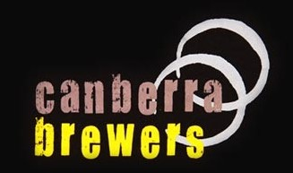
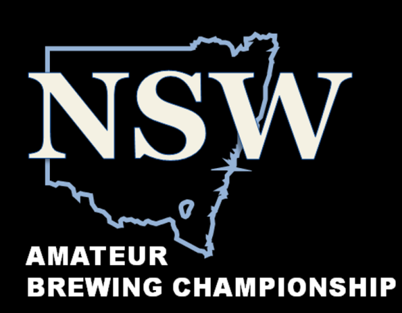
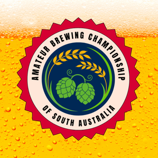
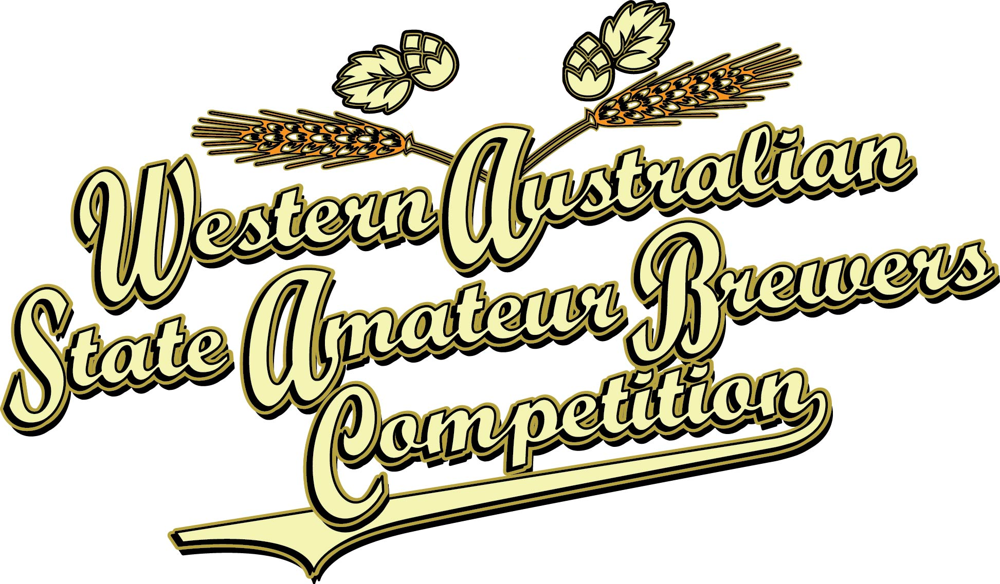
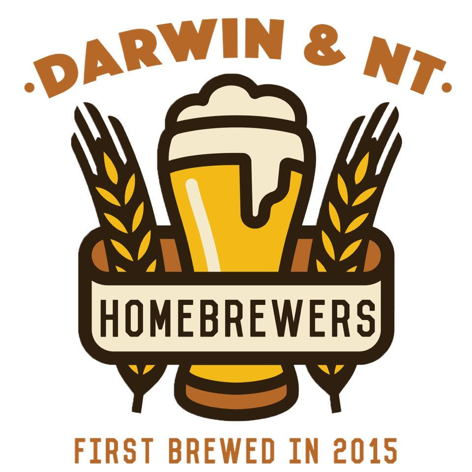

AABC 2025 Qualifying Competitions
Each state and territory in Australis runs their own qualifying competition for the AABC. See below for details of the competitoin in your state.
Australian Capital Territory
ACT 2025 Amateur Brewing Championship
12th, 13th, and 14th of September 2025.
Enquiries to: competition@canberrabrewers.com.au
Click here to visit entry siteNew South Wales
The NSW Amateur Brewing Championship
September 21st & 22nd 2025.
Click here to visit entry siteQueensland

Queensland Amateur Brewing Championship
September 5th & 6th 2025.
Click here to visit entry siteSouth Australia
Amateur Brewing Championships of South Australia, ABCSA 2025 (formerly SABSOSA)
September 20th & 21st 2025.
Click here to visit entry siteWestern Australia
WA State Amateur Brewers Competition 2025
August 29th to 31st 2025.
Click here to visit entry siteNorthern Territory
Amateur Brewers Competition of the Northern Territory
September 20th 2025.
Click here to visit entry siteTasmanian 2025 State Home Brew Competition
Saturday 23rd August 2025.
Click here to visit entry site